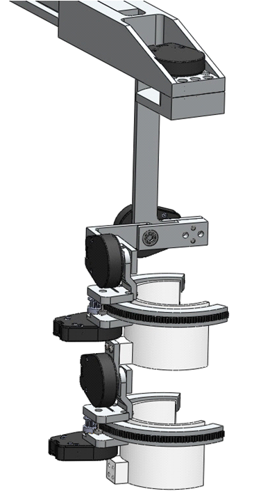
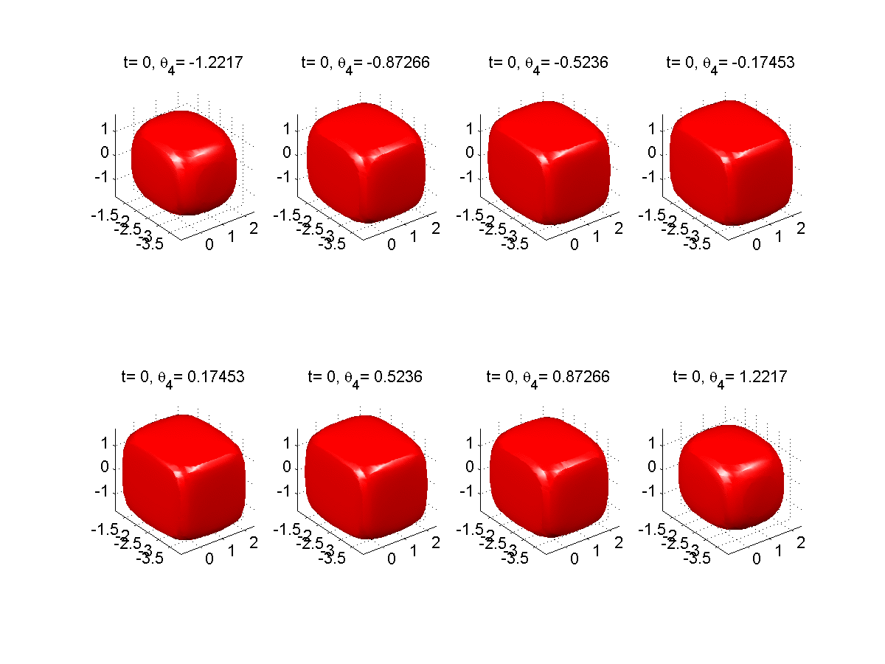
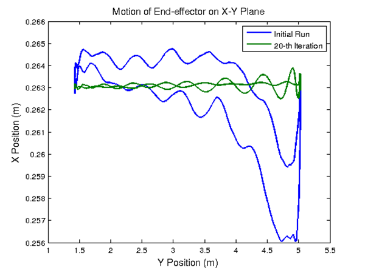

Chen, Wenjie
Chen, Wenjie Ph.D.
Curriculum Vitae [PDF]
Senior Development Engineer
Learning Robot Department
Robot Laboraroty
FANUC Corporation
Oshino-mura, Yamanashi Prefecture 401-0597, Japan
Email: wjchen84 AT gmail.com
Last updated on Feburary 15, 2014
Research Overview
Research Interests
Theory and application of dynamic systems and control; robotic/mechatronic systems. Applications
to industrial robots, wearable assistive robotics, robots for advanced manufacturing.
Research Experiences
- EFRI-M3C: A Hybrid Control Systems Approach to Brain-Machine Interfaces for Exoskeleton Control
- Intelligent Control of Robot Manipulators for Performance Enhancement
- Development of Design/Analysis and Evaluation Technologies for Vibration Reduction of LCD Substrate Transfer Robot
- Real Time Drawing Robot
- High-Speed / High-Precision Motion Control of Biaxial Linear Motor
- 3D Virtual Reality Software Design for Underwater Manipulator
- Mechanical Design of Football Robot in RoboCup Small-Sized League
- Bio-inspired In-Pipe Moving WormBot
- CAD Software - IG-541 Fire Protection Piping System Design

EFRI-M3C: A Hybrid Control Systems Approach to Brain-Machine Interfaces for Exoskeleton Control
01/2012 - 10/2013, Postdoc Scholar (as Graduate Student Researcher prior to 08/2012)
PIs: Prof. Jose M. Carmena,
Prof. Masayoshi Tomizuka,
Prof. Claire J. Tomlin, UC Berkeley
Sponsor: National Science Foundation
- Emerging Frontiers in Research and Innovation (EFRI)
- Multi-degree of freedom (e.g., 6-DOF) upper-limb (passive and actuated) exoskeleton design for macaque monkeys in the brain-machine interface (BMI) study.
- Control scheme (e.g., position control, torque control, impedance control) design for the upper-limb exoskeleton actuation.
- Exoskeleton kinematic and dynamic calibration, as well as motion and torque sensing/estimation.
- Collaboration on BMI experiments to address the central research question: Does the brain use motor programs to help it control a highly redundant multi-degree of freedom biomechanical plant such as the arm?
Some Progress on Passive Exoskeleton (Powered Exoskeleton Forthcoming ...)

Singularity Reachable Set Analysis/Computation
Joint Limit Reachable Set Analysis/Computation

Intelligent Control of Robot Manipulators for Performance Enhancement
08/2007 - 10/2013, Postdoc Scholar (as Graduate Student Researcher prior to 08/2012)
Supervisor: Prof. Masayoshi Tomizuka,
Mechanical Systems Control Lab, UC Berkeley
Sponsor: FANUC, Ltd., Japan
- Sensor fusion for load side (end-effector) state estimation in robots with joint elasticity.
- Dual-stage iterative learning control in robots with joint elasticity.
- Disturbance rejection controller design, e.g., disturbance observer (DOB) and adaptive robust controller (ARC), in robots with joint elasticity.
- Friction force identification and compensation in robots with joint elasticity.
- Dynamic modeling and system identification of multi-joint robots.
- Automatic gain tuning using iterative feedback tuning in indirect drive trains.
- Real-time system implementation with MATLAB & xPC Target for FANUC M-16iB-20 robot, and NI LabVIEW Real-time & FPGA modules for single-joint robot testbed.
Development of Design/Analysis and Evaluation Technologies for Vibration Reduction of LCD Substrate Transfer Robot
01/2011 - 03/2012, Graduate Student Researcher
Supervisor: Prof. Masayoshi Tomizuka,
Mechanical Systems Control Lab, UC Berkeley
Sponsor: Hyundai Heavy Industry, South Korea
- Dynamic modeling and simulation of the LCD substrate transfer robot considering end-effector vibration behavior induced by flexible links.
- Sensor-based learning control and disturbance observer (DOB) design for vibration reduction.


Real Time Drawing Robot
08/2007 - 12/2007, ME230 Project
Supervisor: Prof. David Auslander, UC Berkeley
- Control the Scorbot to reproduce user defined drawings onto an arbitrary drawing plane.
- Algorithm design includes: state machine, controller design, inverse kinematics, etc.
- Implementation on a 6 degrees of freedom Scorbot interfaced with LabVIEW/CVI.
High-Speed / High-Precision Motion Control of Biaxial Linear Motor
09/2006 - 06/2007, Undergraduate Research Assistant
Supervisor: Prof. Bin Yao, Precision Mechatronic System Lab, Purdue University & Zhejiang University
- Friction force identification and compensation in the biaxial linear motor stage.
- Adaptive robust control (ARC) for biaxial linear motor high-speed / high-precision motion.
- Coordinated motion controller design and comparative study for the biaxial linear motor stage.
3D Virtual Reality Software Design for Underwater Manipulator
08/2004 - 09/2006, Undergraduate Research Assistant
Supervisor: Prof. Linyi Gu, Inst. of Mechatronic Control Engineering, Zhejiang University
- Software design for 3D virtual reality interactive control of the underwater manipulator.
- Independent software system development using Visual C++ & OpenGL.
Mechanical Design of Football Robot in RoboCup Small-Sized League
09/2004 - 10/2005, Research Member, Mechanical Group of RoboCup Small-Sized League
State Key Lab of Industrial Control Technology, Zhejiang University
- Roller design improvement of the dribbling system in the RoboCup small-sized football robots.
- Theoretical calculations and experimental validation of the roller design (material, shape and position).
- Ball-shooting system design for the fifth version of RoboCup small-sized football robots.
Bio-inspired In-Pipe Moving WormBot
12/2004 - 05/2005, Team Leader, the Tenth Mechanical Design Contest (3rd prize)
Supervisor: Prof. Xiangyong Qian, Zhejiang University
- Design & fabrication of a bio-inspired robot that can move through small bent pipes of certain diameters less than 50cm, based on the principle of worm movement.

CAD Software - IG-541 Fire Protection Piping System Design
07/2004 - 06/2005, Team Leader, Student Research Training Program
Supervisor: Associate Prof. Yingjun Xie, Zhejiang University
- Design of the algorithm and structure of a cad software - IG-541 fire protection piping system design.
- Software development using Visual Basic and AutoLisp language.
- Successful software test in Zhejiang Yongan Fire Protection Company, China.